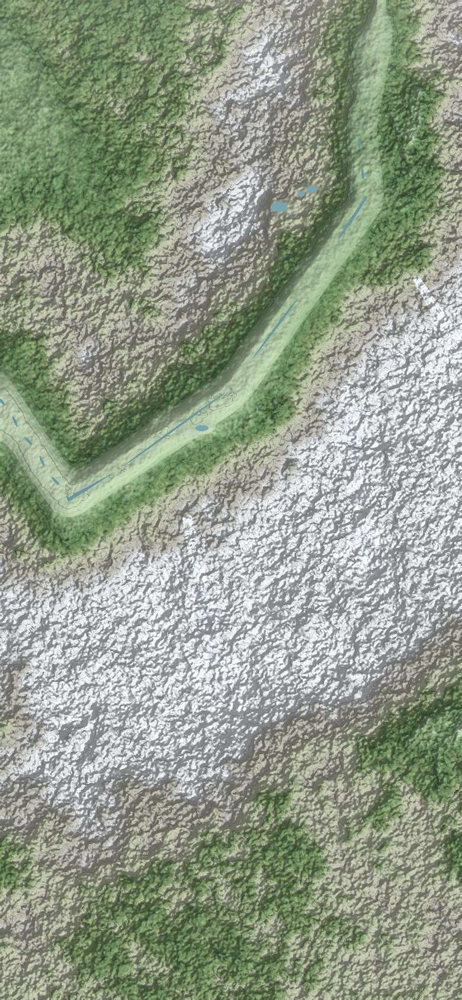

Lac Blanc par les Chéserys
Chamonix
Argentière
Les Houches
Col des Montets
La Flégère
Planpraz
Montenvers
1
2
3
Le Brévent
2 525 m
Aiguille du Midi
3 842 m
Mont Blanc
4 805 m
Lac Blanc
2 352 m
Lacs des Chéserys
eau à filtrer
Lac des Gaillands
famille
Refuge du Lac Blanc
gardé
Bivouac signalé
à vérifier
Névé glissant
il y a 3 h
Départ
bus · train
Belvédère
1 877 m
Bellachat
refuge
L
Y
{{ crA }}
›
{{ crB }}
Un lac en famille, moins d’1 h de marche
{{ gT }}
{{ gS }}
SOS
Course
En direct
Chamonix · boucle des Gaillands
Direct
Tours
Cœur
Sécurité
{{ tm }}
Distance
{{ km }} km
Allure
{{ pace }}
Cardio
{{ hr }} bpm
D+
{{ dp }} m
Kilomètres
km 6 en cours
Coach vocal
· « Allure stable, garde 5'00. »
km 1
Le long de l’Arve
5'04
km 2
Lac des Gaillands
4'58
km 3
Les Pècles
5'02
km 4
Retour rive droite
5'00
km 5
Centre
4'59
Z1 récup
Z2 fond
Z3 tempo
Z4 seuil
Bouteille à la mer
Position partagée avec 2 proches
Détection de chute
Alerte si immobile 2 min
SOS : maintiens le bouton SOS de la carte 1,5 seconde pour appeler le 112 et envoyer ta position.
{{ tm }}
{{ accSub }}
Explorer tourne en arrière-plan
L’activité continue dans l’Island · touche pour revenir
{{ tm }}
{{ islR }}
{{ actName }}
· Chamonix
En direct
{{ tm }}
{{ m1v }}
{{ m1l }}
{{ m2v }}
{{ m2l }}
{{ m3v }}
{{ m3l }}
{{ nT }}
{{ nS }}
SOS en cours
Appel du 112 dans 3 s · position envoyée
112
{{ nT }}
{{ nS }}
3
{{ actName }} · départ
2
{{ actName }} · départ
1
{{ actName }} · départ